1 简介
自从 spacemacs 横空出世之后，最好的代码编辑器已经不再是Emacs或者Vim，而是二者合一！
The best editor is neither Emacs nor Vim, it's Emacs and Vim!
虽然说Source Insight对于广大人群来讲更加简单、好用，但是熟悉spacemacs后你会更加爱不释手。
简单来说，使用spacemacs只要键盘即可，无需鼠标，可以极大提高效率。
2 安装
2.1 Emacs
spacemacs是对Emacs的扩展，所以要求先安装24.4版本以上的Emacs。比较简单，不赘述。
2.2 默认安装
按照 官方说明 安装即可，基本上只要把代码clone下来后重新打开Emacs就可以自动完成后续操作。
3 新手指引
3.1 模式
由于采用Emacs+Vim，所以存在Emacs模式和Vim模式。
怎么区分呢？很简单，通过左下角和光标的颜色即可区分。
黄色代表Vim模式：
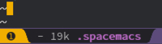
蓝色代表Emacs模式：
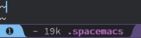
通过 ESC 按键进入Vim模式，通过 a 或 i (Vim下能进入编辑模式的按键皆可)进入Emacs模式。
简单来说，Vim的编辑模式对应Emacs模式。
3.2 按键/快捷键
为了下文说明的方便，约定如下按键缩写：
| 按键缩写 | 实际按键 |
|---|---|
| SPC | space |
| C | ctrl |
| M | alt |
| S | shift |
| DEL | backspace |
Spacemacs许多命令的快捷键都是以空格键 SPC 开始的，所以才叫spacemacs。^_^
举例来说，按键序列 SPC j j 表示先按空格键，然后按两下 j 。
当你按下空格键后，后续可选的按键就会在下方弹出提示。
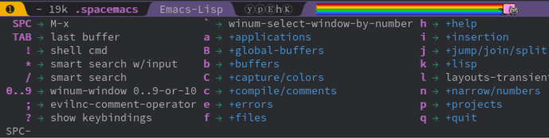
当你发现按错(或者操作错误)的时候，一般都可以通过按几次 ESC (或者 C-g)取消操作。
此时你可能在担心按键太多记不住怎么办，别担心，快捷键是有规律的。
大家都知道，记住有规律的、有含义的东西是容易的，而spacemacs的快捷键就是按照操作分类的。
比如说，以 SPC f 开始的快捷键表示文件相关的命令，其中 f 代表的是file。
相关的命令包括：打开文件 SPC f f 、保存文件 SPC f s 等等，是不是很好记？
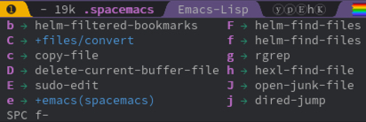
以 SPC m (或者更简短的 ,)开始的快捷键表示主模式相关的命令，其中 m 代表的是mode。
主模式(Major Mode)随着当前代码语言的改变而改变，比如说C/C++对应主模式为CC Mode。
如果大家对于Emacs或者Vim基本按键不熟的话，请先自学再继续阅读下文。
通过按键 C-h t 也就是ctrl+h再按t键即可打开Emacs自带的教程。
3.3 命令
虽然说spacemacs的常用快捷键好记，但是还有许多快捷键我们不知道或者忘记了。
好消息是我们完全没有必要记住，记住常用的即可，其它可以通过输入命令执行。
当然我们也没必要记住命令的精确名字，因为我们可以通过模糊匹配的方式找到命令并执行。
比如说我们想选中当前函数，但是不知道快捷键是什么，怎么办呢？
在spacemacs选中的命令一般都含有mark，而函数的英文是function。
执行命令的快捷键是 SPC SPC (Linux)或者 SPC : (Mac)。
于是我们尝试输入mark func，输入过程中(mark fun)可以看到只有两个匹配了。 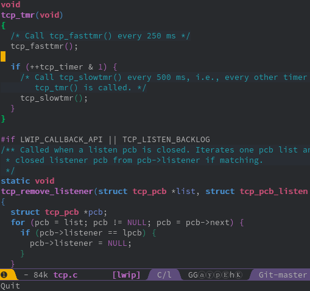
实际上这两个命令都可以满足我们的需求，所以任选一个执行即可。
另外我们还看到选中当前函数的快捷键是 C-M-h ，也就是ctrl+alt+h。
如果对你来说这个操作很常用，那么就可以趁这个机会顺便记住了。
正是因为查找命令支持模糊匹配，所以我们只需记住几个关键字即可。
查找命令还会记住你的使用频率，按照使用频率和匹配程度自动排序。
也就是说，经常使用的话，你甚至可以只输入 mf 选中当前函数的命令就会自动排第一。
下文的操作将会尽量同时提供快捷键和命令，大家根据自己的习惯和记忆力选取适合自己的进行记忆即可。
3.4 配置文件
| 快捷键 | 助记 | 命令(支持模糊匹配) | 操作 |
| SPC f e d | file emacs dotfile | find dotfile | 打开配置文件 |
| SPC f e R | file emacs reload | sync config | 重新加载配置 |
| SPC f s | file save | save buffer | 保存文件 |
Spacemacs的配置基本都在 .spacemacs 文件，所以通常我们修改配置文件并保存，然后重新加载。
另外配置文件采用Elisp(Emacs Lisp)语言，注意符合语法，特别不要出现括号不匹配的情况。
3.5 帮助
Spacemacs带有许多帮助功能，所以在寻求外部帮助之前，我们可以先看看是否可以通过帮助功能解决。
| 快捷键 | 助记 | 命令(支持模糊匹配) | 操作 |
| SPC h d f | help describe function | describe function | 查询函数(命令) |
| SPC h d k | help describe key | describe key | 查询按键 |
| SPC h d m | help describe mode | describe mode | 查询模式 |
| SPC h d v | help describe variable | describe variable | 查询变量 |
| SPC h SPC | help spacemacs | spacemacs help | spacemacs帮助 |
| SPC h l | help layer | spacemacs layer help | layer帮助 |
| … |
4 操作与配置
下面介绍代码编辑、浏览的操作，部分操作可能需要配置以达到最佳效果。
另外后面默认使用Emacs和Vim混合风格，需要在 .spacemacs 文件设置好(快捷键 SPC f e d )。
4.1 滚动浏览
通常我们都会通过鼠标滚轮来上下浏览代码，在spacemacs我们只需要一两个按键即可。
首先我们需要配置开启全局居中：
然后通过Vim风格由hjkl控制移动，也就是通过按 j 往下滚动一行，按 k 往上滚动一行。
需要滚动多行怎么办？前面加数字即可，比如说往下滚动11行，按 11 j 即可，简单吧？
| 快捷键 | 命令(支持模糊匹配) | 操作 |
| j | next line | 往下滚动一行 |
| k | prev line | 往上滚动一行 |
| {数字} j | 往下滚动N行 | |
| {数字} k | 往上滚动N行 | |
| C-d | scroll down | 往下翻屏 |
| C-u | scroll up | 往上翻屏 |
| { | backward paragraph | 上一段落 |
| } | forward paragraph | 下一段落 |
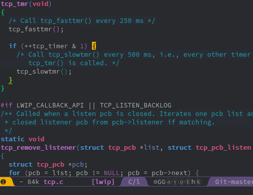
4.2 跳转
4.2.1 跳到指定字符
还在用鼠标移动光标？来试试spacemacs简单、快速、精准的跳转吧。
SPC j j 可以通过两三下按键即可跳转到视线范围内任意字符(支持中文，通过拼音首字母)。
| 快捷键 | 助记 | 命令(支持模糊匹配) | 操作 |
| SPC j j | jump jump | goto char | 跳到视线范围内字符 |
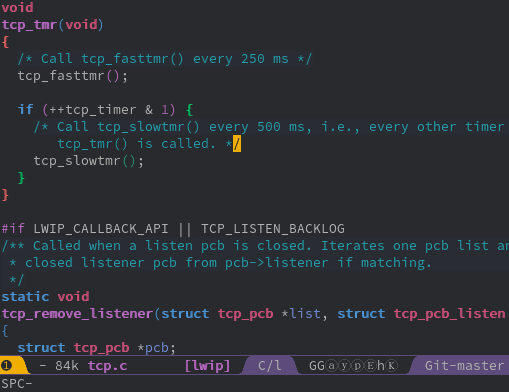
如上图所示，假设我们想跳到tcp_timer中timer的t字符。
首先输入 SPC j j 以及 t ，然后依次输入timer位置提示的字符 h d 即可。
4.2.2 跳到指定行
SPC j l 可以通过一两下按键即可跳转到指定行。
| 快捷键 | 助记 | 命令(支持模糊匹配) | 操作 |
| SPC j l | jump line | goto line | 跳到指定行 |
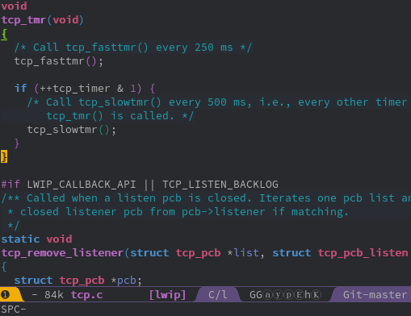
当然 SPC j l 可以指定具体的行号，比如说100。
所以跳转到文件开头和结尾也可以通过跳转到第1行、第9999行实现。
4.2.3 跳到定义/引用
跟具体代码语言有关，通常需要代码tagging系统的支持才行。
推荐安装 GNU GLOBAL ，支持大部分主流编程语言解析，具体使用参见在后面 GNU GLOBAL 章节。
以C/C++为例，安装完GLOBAL之后再加载gtags layer即可通过 SPC m g d 跳转到定义。
4.2.4 局部变量定义、使用位置间跳转
详见后面 高亮 章节。
4.2.5 跳到函数开头
命令实际上是beginning-of-defun，不过我们模糊输入 bof 就可以了。
| 快捷键 | 命令(支持模糊匹配) | 操作 |
| C-M-a | begin of func | 跳到函数开头 |
4.2.6 跳到书签
| 快捷键 | 助记 | 命令(支持模糊匹配) | 操作 |
| m {a-zA-Z} | mark | set marker | 设置书签 |
| ` {a-zA-Z} | goto mark | 跳到书签 | |
| `` | goto mark | 跳回最近设置的书签 | |
| show marks | 显示所有书签 |
m +小写字母设置当前文件有效的书签，只能在当前文件内跳转。
m +大写字母设置全局有效的书签，支持跨文件跳转。
` +之前设置的字母即可跳到对应的书签。
`` 跳回最近设置的书签。
evil-show-marks 命令可以显示所有书签，通过show mark关键字即可搜索到该命令。
4.2.7 回到跳转前
方法一就是跳转前设置书签(见上一小节)，推荐设置全局书签。该方法有些麻烦，不过比较通用。
方法二主要是针对跳转定义/引用这种情况，以GLOBAL(gtags)来说会保存跳转历史，支持前后跳转。
4.3 搜索
4.3.1 搜索字符串
通过 SPC s s 快捷键即可在当前文件中搜索。
该搜索命令还有个好处就是，在搜索结果中上下切换时会自动跳转到对应行，方便确认是否所需结果。
另外Vim的按键 * # / ? 依然好使哦。
| 快捷键 | 助记 | 命令(支持模糊匹配) | 操作 |
| SPC s s | search swoop | swoop | 搜索字符串 |
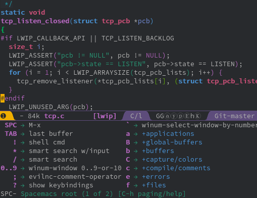
比如说我们想在当前文件搜索 tcp_tmr (跳转定义有其它快捷键，这里只是举例)。
随着我们的输入，匹配的行越来越少，当我们确定234行的搜索结果就是想要的结果时可以加上行号进行搜索。
在工程范围内搜索，请参见后面的 工程 章节。
4.3.2 搜索文件
在工程范围内搜索文件，请参见后面的 工程 章节。
4.4 替换
4.4.1 当前文件内替换
通过 M-% 或者 C-M-% 快捷键可以替换当前文件的字符串，采用逐一询问的方式(y 替换 n 跳过 q 结束)。
| 快捷键 | 命令(支持模糊匹配) | 操作 |
| M-% | query replace | 逐一询问替换字符串 |
| C-M-% | query repalce regex | 逐一询问替换匹配正则表达式的字符串 |
4.4.2 工程内全局替换
在工程范围内搜索，请参见后面的 工程 章节。
4.5 选择区域/复制粘贴
不用鼠标完成选中区域操作？对于spacemacs来说只是小菜一碟。
4.5.1 通用方法
首先介绍通用的方法，方便那些不想记太多快捷键的人。
选中操作其实包括起始点和结束点的指定，所以选中的步骤如下：
- 设置起始点
- 跳转到结束点
是不是很简单？好，那么怎么设置起始点呢？
可以通过 C-@ (也就是ctrl+@)快捷键或者 set-mark-command命令，又或者 v 进入选择模式。
| 快捷键 | 命令(支持模糊匹配) | 操作 |
| C-@ 或者 v | set mark | 设置标记起始点 |
怎么跳到结束点？还记得前面 跳转到指定字符 吗？想跳哪就跳哪，就是这么任性。
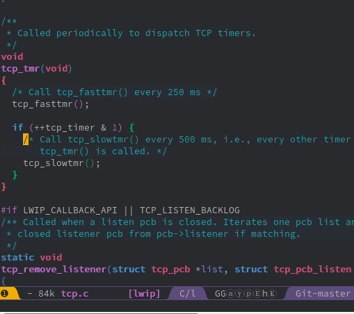
上图展示了如何选中注释内容，其中跳转到 / 通过 % 键会更高效，不过为了展示通用方法没有采用而已。
4.5.2 选中单词
选中单词大同小异，如果起始点设置在单词开头，那么可以通过 M-f (alt+f) 往前选中一个单词。
| 快捷键 | 命令(支持模糊匹配) | 操作 |
| M-f | forward word | 前进一个单词 |
| M-b | backward word | 回退一个单词 |
| yw | yank word | 复制单词 |
| yW | yank WORD | 复制单词(含符号) |
4.5.3 选中行
选中行大同小异，如果起始点设置在行首，那么可以通过 $ (Vim模式) 或者 C-e (Emacs模式)跳转行尾。
| 快捷键 | 命令(支持模糊匹配) | 操作 |
| $ 或 C-e | line end | 跳到行尾 |
| ^ 或 C-a | line begin | 跳到行首 |
| yy | yank line | 复制当前行 |
V进入行选择模式 + SPC j l
|
复制多行 |
4.5.4 选中当前函数
| 快捷键 | 命令(支持模糊匹配) | 操作 |
| C-M-h | mark fun | 选中当前函数 |
4.5.5 选中配对内容
Vim模式下通过 % 键可以跳到配对的内容，比如说括号 (){}[] ，甚至包括 #ifdef 。
用来选中代码块真是再合适不过了。
| 快捷键 | 命令(支持模糊匹配) | 操作 |
| % | jump item | 跳到配对的内容 |
4.5.6 全选
全选快捷键不是 ctrl+a 。。。推荐记住makr buffer关键字即可。
另外也可以通过跳到第一行设置起始点后再跳转到文件末尾的方式，略麻烦。
| 快捷键 | 命令(支持模糊匹配) | 操作 |
| C-x h | mark whole buffer | 全选 |
4.6 文件操作
4.6.1 打开文件
| 快捷键 | 命令(支持模糊匹配) | 操作 |
| SPC f f | file find | 打开文件 |
| SPC f r | file recent | 打开最近的文件 |
在工程范围内搜索文件，请参见后面的 工程 章节。
4.6.2 保存文件
| 快捷键 | 命令(支持模糊匹配) | 操作 |
| SPC f s | file save | 保存文件 |
4.6.3 文件导航树
| 快捷键 | 命令(支持模糊匹配) | 操作 |
| SPC f t | file tree | 打开文件导航树 |
4.7 删除
4.7.1 删除字符
| 快捷键 | 模式 | 命令(支持模糊匹配) | 操作 |
| x | Vim | delete char | 删除字符(光标后) |
| C-d | Emacs | delete char | 删除字符(光标后) |
| DEL | Emacs | delete backward char | 删除字符(光标前) |
4.7.2 删除单词
| 快捷键 | 模式 | 命令(支持模糊匹配) | 操作 |
| dw | Vim | delete word | 删除单词(光标后) |
| M-d | Emacs | kill word | 删除单词(光标后) |
| M-DEL | Emacs | kill backward word | 删除单词(光标前) |
4.7.3 删除行
| 快捷键 | 模式 | 命令(支持模糊匹配) | 操作 |
| dd | Vim | delete line | 删除当前行 |
| C-S-DEL | Emacs | kill whole line | 删除当前行 |
| C-k | Emacs | kill line | 删除光标到行尾内容 |
4.8 标签页
通常我们通过点击标签页来切换不同的文件。虽然有ctrl+tab快捷键，但是文件打开多了之后，又聊胜于无。
实际上切换可以更简单，就是我们指定文件名然后切换。当然文件名支持模糊匹配，只需要几个关键字即可。
| 快捷键 | 助记 | 命令(支持模糊匹配) | 操作 |
| SPC tab | tab | alternate buffer | 切换到上一文件 |
| SPC b b | buffer buffer | helm-mini | 切换到指定文件 |
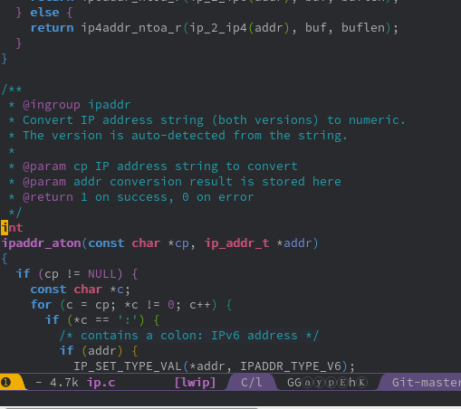
上图展示了如何在打开多个文件(ip.c ip4.c ip6.c等)的情况下切换到tcp.c。
4.9 多窗口
有时候我们希望同时打开多个窗口，以便对比、参考。
Spacemacs定义了一系列以 SPC w 开头的快捷键，表示window相关的操作。
4.9.1 新建窗口
| 快捷键 | 命令(支持模糊匹配) | 操作 |
| SPC w - 或者 SPC w s | window split below | 下方新建窗口 |
| SPC w / 或者 SPC w v | window split vertically | 右侧新建窗口 |
创建两个以上窗口只需要重复上述操作即可。
4.9.2 窗口导航
每个窗口都会有一个数字编号，显示在左下角。当我们想跳转到某个窗口时，只要 SPC 加上对应编号即可。
| 快捷键 | 命令(支持模糊匹配) | 操作 |
| SPC {0-9} | select window | 选择/跳转到对应数字编号的窗口 |
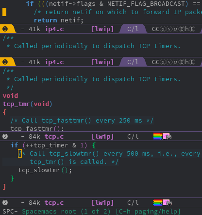
4.9.3 最大化窗口
当我们想集中注意到某个窗口时，一般我们会选择最大化该窗口。
| 快捷键 | 命令(支持模糊匹配) | 操作 |
| SPC w m | window(buffer) maximize | 最大化当前窗口 |
4.9.4 关闭窗口
| 快捷键 | 命令(支持模糊匹配) | 操作 |
| SPC w d | window delete | 关闭窗口 |
4.10 注释
4.10.1 添加注释
| 快捷键 | 命令(支持模糊匹配) | 操作 |
| M-; | comment dwim | 添加注释 |
4.10.2 注释掉当前行
| 快捷键 | 命令(支持模糊匹配) | 操作 |
| C-x C-; | comment line | 注释掉当前行，再次执行取消注释 |
4.10.3 注释掉区域
| 命令(支持模糊匹配) | 操作 |
| comment region | 注释掉区域 |
| SPC u + comment-region | 取消注释区域 |
或者按上文说明选中区域后按 M-; 。
4.11 代码片段生成
通过yasnippet可以很方便地生成代码片段，比如说include、if、for等语句。
虽然auto-complete中有变量 auto-completion-enable-snippets-in-popup 开启提示，不过比较卡。
建议还是通过 SPC i s 手动插入。
| 快捷键 | 命令(支持模糊匹配) | 操作 |
| SPC i s | insert snippet | 插入代码片段 |
4.12 文档生成
既然snippet能够生成代码片段，生成文档也不在话下。
比如说通过 brief snippet可以给函数添加文档说明哦。
4.13 代码折叠
虽然对我来说代码折叠不是太常用，但是这里也记录一下吧。
| 快捷键 | 命令(支持模糊匹配) | 操作 |
| z a | fold toggle | 折叠代码块，再次执行展开代码块 |
4.14 自动补全
自动补全是通过启用auto-complete layer实现的。
(setq-default dotspacemacs-configuration-layers
'(
;;
(auto-completion :variables
auto-completion-enable-sort-by-usage t
auto-completion-enable-snippets-in-popup t)
;;
))如果是C/C++的话，建议开启Clang支持，能够提供更精确的补全。该功能需要先安装Clang。
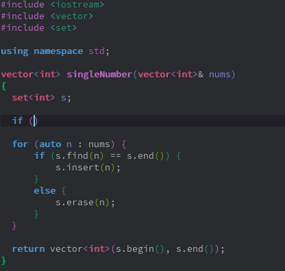
.clang_complet 文件。
4.15 自动对齐/格式化k
自动对齐涉及编码风格，比如说tab长度是2还是4。
自动对齐主要操作就是按tab键，可以选中区域也可以不选中。虽然操作简单，但是背后的配置就不是那么简单。
这里主要说明如何配置C/C++的对齐。可以先参考 Indenting C 的说明。
Emacs自带 c-guess-buffer-no-install 命令可以根据当前文件的内容推断出一些对齐规则。
通过 c-guess-view 命令可以查看推断出来的对齐规则，然后根据我们自己的需要酌情修改。
另外还可以通过 clang-format 对代码进行格式化，当然需要先安装clang-format。
clang-format可以根据 .clang-format 文件进行格式化，创建 .clang-format 文件最简单的方法如下：
然后根据 Style Options 以及我们的需求进行修改。
配置完成后可以通过 clang-format-region 或者 clang-format-buffer 选择性地格式化代码。
当然你还可以绑定快捷键到tab：
;; Bind clang-format-region to C-M-tab in all modes:
(global-set-key [C-M-tab] 'clang-format-region)
;; Bind clang-format-buffer to tab on the c++-mode only:
(add-hook 'c++-mode-hook 'clang-format-bindings)
(defun clang-format-bindings ()
(define-key c++-mode-map [tab] 'clang-format-buffer))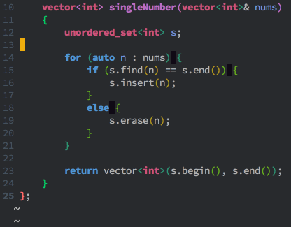
4.16 工程
工程主要是通过 Projectile 实现的，Projectile定义的工程很简单，就是含有特殊文件的目录。
4.16.1 新建工程
你可以手动创建新的工程，需要做的只是在工程根目录下新建一个空的 .projectile 文件即可，so easy。
另外如果你的工程是通过Git管理的，那么无需额外的操作你的工程就会自动识别为工程。
4.16.2 搜索文件
通过 SPC p f 快捷键可以搜索并打开工程内的文件。
| 快捷键 | 助记 | 命令(支持模糊匹配) | 操作 |
| SPC p f | project find | project find file | 搜索工程内的文件 |
4.16.3 搜索字符串
通过 SPC s p 或者 SPC / 以正则表达式搜索工程内的字符串。
| 快捷键 | 助记 | 命令(支持模糊匹配) | 操作 |
| SPC s p | search project | project search | 搜索工程内的字符串 |
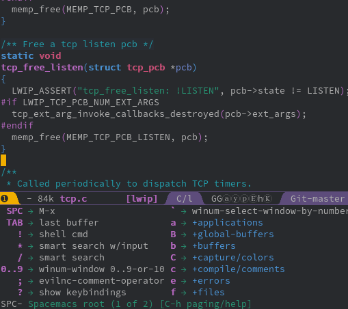
上图展示了如何搜索slow start实现的代码。
4.16.4 替换
通过 SPC p R 或者 SPC p % 快捷键可以替换工程内的字符串，后者支持正则表达式。
| 快捷键 | 助记 | 命令(支持模糊匹配) | 操作 |
| SPC p R | project replace | project replace | 替换工程内字符串 |
| SPC p % | project regex replace | 替换工程内匹配正则表达式的字符串 |
4.16.5 文件导航树
通过 SPC p t 快捷键可以打开工程的文件导航树，与Source Insight的工程文件列表类似。
可以偶尔看看工程的目录结构，平时还是关闭了吧，节约空间。
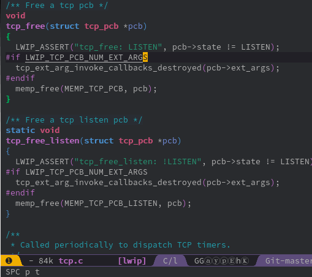
4.17 man手册
| 快捷键 | 命令(支持模糊匹配) |
| SPC h m | help manual |
通过 SPC h m 快捷键可以在spacemacs上浏览manual手册，复用spacemacs强大而又通用的搜索、跳转。
再也不用另外记住man的快捷键，一套通用的快捷键足以。
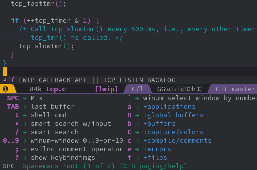
上图展示了如何查看epoll的man手册，并且搜索trigger关键字定位到ET和LT的说明。
另外由于spacemacs实际上也是通过man命令打开，所以某些系统的man命令可能不支持 -l 选项。
上述问题可以通过设置 helm-man-format-switches 变量解决(去除不支持的选项)。
4.18 shell
执行shell命令可以通过快捷键 SPC ! 。执行多条shell命令的话建议通过 eshell 操作，可以跨平台使用。 使用 eshell 还可以复用spacemacs的快捷键，不用再额外打开终端。
| 快捷键 | 命令(支持模糊匹配) | 操作 |
| SPC ! | shell command | 执行shell命令 |
| eshell | 打开Elisp实现的类unix命令行 |
4.19 语法检查
通过flycheck以及Clang可以支持即时语法检查。在安装好Clang后，启用syntax-checking即可。
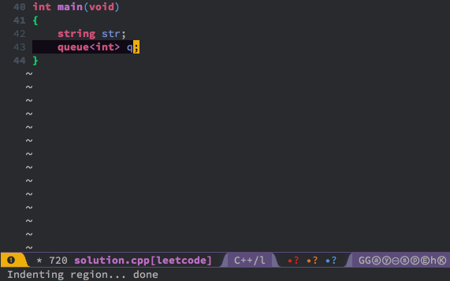
上图展示了我们未引入queue头文件就使用队列时会出现的状况。
可以看到语法检查能够即时通过红点提示我们有语法错误。
通过 SPC e l 快捷键可以查看具体的错误以及位置。
| 快捷键 | 命令(支持模糊匹配) | 操作 |
| SPC e l | error list | 列举错误信息 |
4.20 撤消undo/重做redo
当我们需要撤消或者重做时，通过undo-tree能够以可视化的方式进行选择操作。
通过 SPC a u 快捷键可以执行 undo-tree-visualize 命令，然后选择撤消或者重做。
在undo-tree中导航，可通过方向键或Emacs模式的上下左右按键(C-p C-n C-b C-f)，确定OK后按 q 退出。
| 快捷键 | 命令(支持模糊匹配) | 操作 |
| SPC a u | application undo | 撤消或重做 |
4.21 高亮
通过 SPC s h 快捷键可以高亮变量。
在高亮模式下， n 键可以跳到下一使用位置， p 键可以跳到上一使用位置， d 可以跳到定义位置。
通过 SPC s c 快捷键可以取消高亮。
需要注意的是当文件比较大的时候或者匹配比较多的时候可能造成卡顿。
建议把default range设置成display，然后在实际中使用时切换成function或buffer。
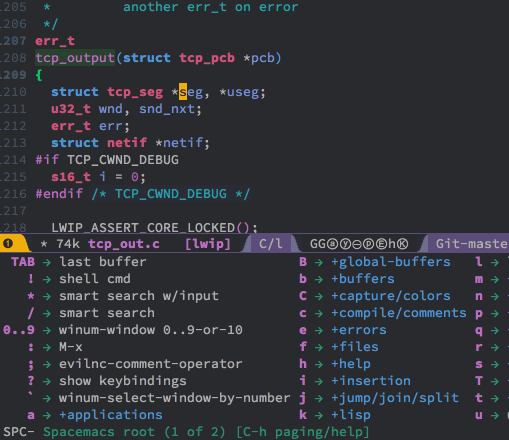
4.22 smart rename/重构
4.22.1 smart rename
| 快捷键 | 助记 | 命令(支持模糊匹配) | 操作 |
| SPC s e | symbol edit | iedit | 同步编辑当前区域(变量) |
通过 iedit mode 可以实现"智能"重命名变量的效果。
可以通过 SPC s e 直接进入编辑模式，也可以通过 SPC s h 进入高亮模式后再按 e 进入。
先进入高亮模式的话，可以通过 r 键切换作用范围(文档内、可视范围内、函数内)。
同步编辑完成后，可以通过 ESC 或者 C-g 退出。
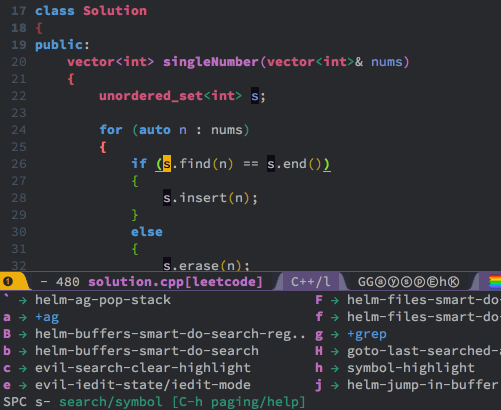
4.22.2 重构
通过 semantic-refactor 可以重构代码，包括自动生成代码(函数实现、Getter和Setters等)、重命名局部变量。
该功能需要启用semantic layer才能正常使用。
5 代码标记系统GNU GLOBAL(gtags)
5.1 安装GLOBAL(gtags)
在官方 下载页面 根据自己的系统下载安装即可。
5.2 gtags layer
把gtags添加到dotspacemacs-configuration-layers以启用gtags layer。
5.3 创建tags文件
为了能够正常使用gtags提供的功能(比如说跳转)，需要先生成tags文件(一个工程一次即可)。
通过 SPC m g c 快捷键可以给当前工程创建tags文件，注意要在工程根目录下执行该命令。
通过 SPC m g u 快捷键可以增量更新当前工程的tags文件。
5.4 跳转到定义/引用
通过 SPC m g d 快捷键可以跳转到定义。
通过 SPC m g r 快捷键可以跳转到引用。
引用的地方一般比较多，如果跳到其中一处引用之后想跳到下一处怎么办？
可以通过 SPC m g R 恢复上次gtags命令，然后通过 ↓ 或者 C-n 选择下一处引用跳转。
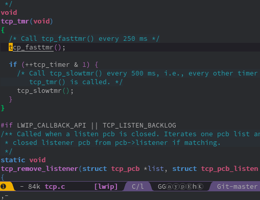
5.5 前后跳转
通过 SPC m g p 快捷键可以跳到跳转历史中上一处跳转。
通过 SPC m g n 快捷键可以跳到跳转历史中下一处跳转。